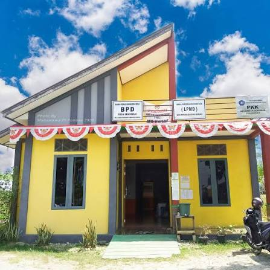
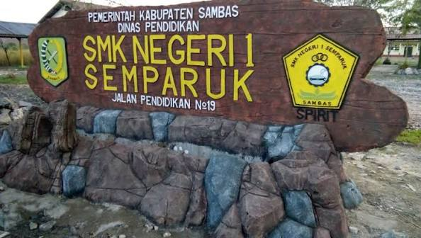
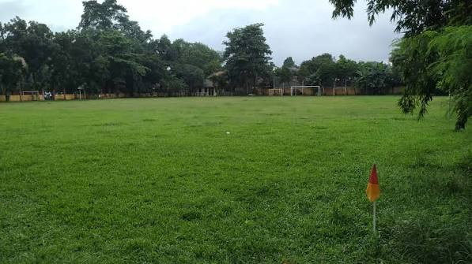

Fasilitas & Potensi Desa
Berbagai fasilitas umum dan potensi alam yang dimiliki Desa Semparuk.
Berbagai fasilitas umum dan potensi alam yang dimiliki Desa Semparuk.
Tempat yang menunjang aktivitas masyarakat sehari-hari.

Pusat pelayanan administrasi masyarakat Desa Semparuk.

Sarana pendidikan bagi anak-anak di lingkungan desa.

Tempat ibadah sekaligus pusat kegiatan keagamaan masyarakat.

Digunakan untuk olahraga dan berbagai kegiatan masyarakat.
Keindahan dan sumber kehidupan masyarakat Desa Semparuk.

Mayoritas masyarakat Desa Semparuk bekerja sebagai petani. Persawahan menjadi identitas utama desa sekaligus sumber ekonomi warga.

Parit dan sungai menjadi bagian penting dari lingkungan desa sebagai aliran air, penunjang persawahan, dan kehidupan masyarakat sekitar.
Beberapa layanan yang tersedia di Kantor Desa Semparuk.
Pembuatan surat pengantar dan pelayanan kependudukan.
Pelayanan berbagai kebutuhan dokumen masyarakat.
Informasi, konsultasi, dan pelayanan masyarakat desa.